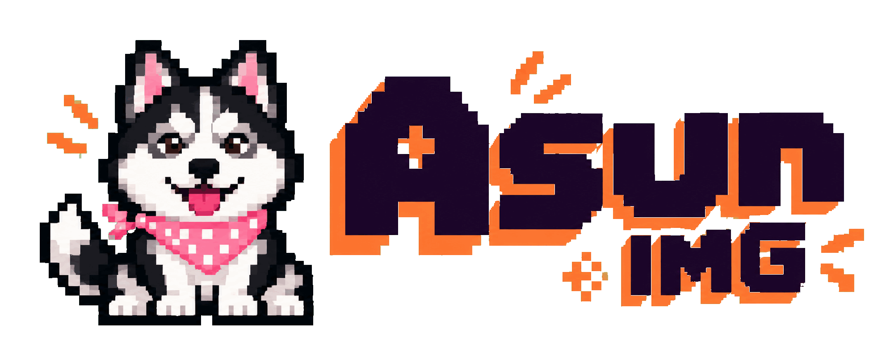

A little space to create.
Drop an image here, paste with Ctrl+V, or import from your computer.
PNG, JPEG or WebP · Your originals stay intactOriginalCurrent edit
Crop canvas to selection
Drop images to add layers
References0 photos
Create image
Starting Asun IMG…

Local projectLocalDrop an image here, paste with Ctrl+V, or import from your computer.
PNG, JPEG or WebP · Your originals stay intact